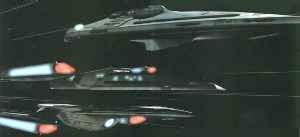

Flotta Stellare - Classe Prometheus |
|  |
Prototipo
sperimentale progettato per missioni tattiche nello spazio profondo.
I sistemi primari di armamento includono scudi rigenerativi, armatura ablativa e
modalità d'assalto multi-vettoriale: può dividersi in tre parti, tutte dotate
di scudi e curvatura in modo da attaccare come un intero squadrone.
È la nave più veloce della Flotta Stellare, e può resistere anche per lunghi periodi a
curvatura 9.9.
È attrezzata con release 2.0 del Medico Olografico di Emergenza.
| USS Prometheus NX-59650 Prototipo della classe, costruita nei cantieri di Beta Antares. Rubata dai Romulani nei pressi di un ingresso del network di trasmissioni degli Hirogeni nel 2374. | Message in a Bottle | Prometeo è il semidio della mitologia greca che ha rubato il fuoco agli
Dei per regalarlo agli uomini, per la qual cosa è stato condannato ad un
supplizio eterno. Nella targa commemorativa della nave il numero di registro è NX-74913. |